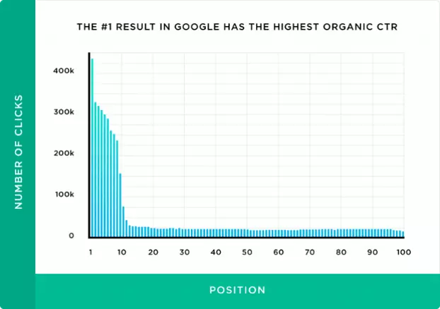
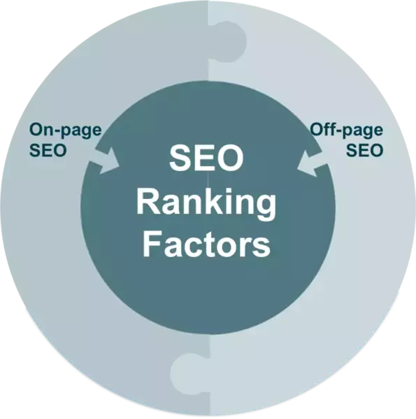
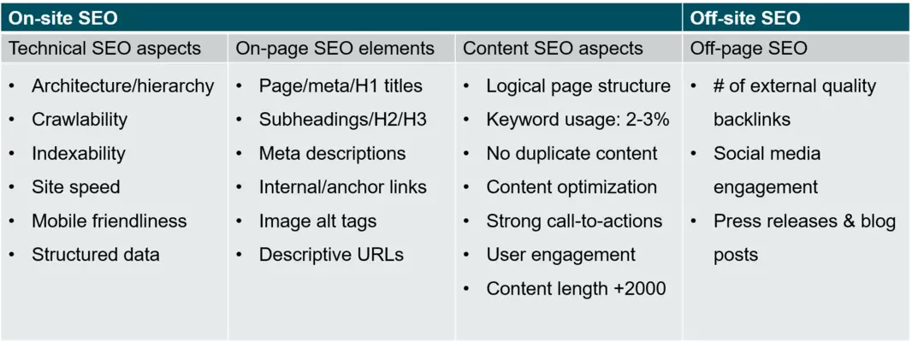
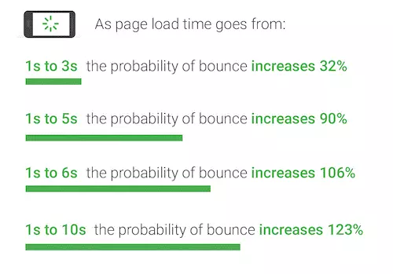
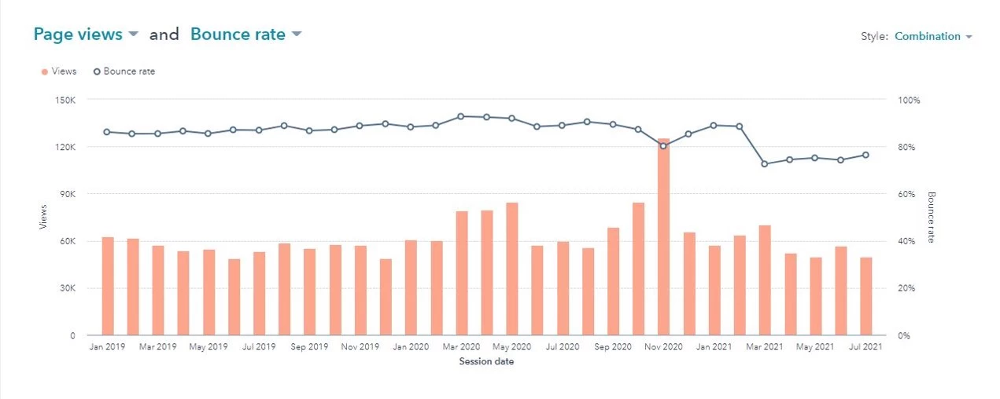

Search engine optimization (SEO) is the process of affecting the visibility of a website or a
webpage in Google’s organic (unpaid) search results through best practices of all current ranking factors.
The purpose of SEO is to improve a website’s rankings in the search results in order to increase the inbound
traffic leading to better brand awareness, findability and visibility.
Why Is SEO Important?
In SEO, ranking refers to your content’s position on the search engine results pages. A #1 ranking means that when people search for a particular term, your webpage is the first organic result.
Appearing on the first page (within the top 10 results) is essential because 95% of people never make it past the first page.

What Are The Factors Impacting Google’s Page Ranking?
Google’s algorithm is secret and constantly changing, and the ranking factors are supposed to be a “black box”.
However, important ranking factors have been unveiled though ongoing test and case studies and can be divided into 2 groups:
On-site SEO vs. Off-site SEO
On-page SEO refers to factors on your own website that you can optimize such as the underlying code and the content.
Off-page SEO refers to actions taken outside of your site to affect your site’s trustworthiness and authority by building the right inbound links and social signals.

Ranking factors – in more detail

Top 10 ranking factors for Google
A secure and accessible website
(Mobile) page speed
Mobile friendliness
Domain age, URL, & authority
Optimized content
Technical SEO
User experience
Links
Social signals
Real business information
What you can do to improve SEO?
Alt on images
Schema JSON-LD
Fix broken links
Valid hreflang
Valid rel=canonical
Document uses legible font sizes
Improve speed of the website
Why page speed is important?


What you can do to improve page speed?
Analyze your website, use tools
Enable compression
Minify CSS, HTML, JavaScript
Eliminate render-blocking JavaScript
Optimize images
Use .webp
Properly Size Images
Lazy load img and div
Lazy load code
AMP
Prioritize above-the-fold content
Optimize fonts
Cumulative layout shift
Identifying critical css
Preconnect to Required Origins
Preload Key Requests
Minyfy everything
Eliminate render-blocking JavaScript
Optimize images
Use .webp
Properly Size Images
Lazy load img and div
Optimize fonts
Preconnect, Preload
Cumulative Layout Shift
Accessibility
Background and foreground colors have a sufficient contrast ratio